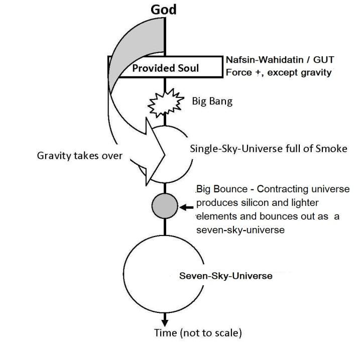

―Because only a few will be saved, God has created two universes instead of only one‖ – 2 ESDRAS 7:50, Holy Bible, GNB
"কারণ মাত্র কয়েকজনকে রক্ষা করা হবে, ঈশ্বর শুধুমাত্র একটির পরিবর্তে দুটি মহাবিশ্ব সৃষ্টি করেছেন" - 2 ESDRAS 7:50, Holy Bible, GNB
The water was primarily created for the Jannaat. One may try to imagine how much water was needed to create billions of habitable planets in the Jannaat. A small quantity was also given to this universe.
পানি প্রাথমিকভাবে জান্নাতের জন্য তৈরি করা হয়েছিল। জান্নাতে কোটি কোটি বাসযোগ্য গ্রহ তৈরির জন্য কতটা পানির প্রয়োজন ছিল তা কেউ কল্পনা করার চেষ্টা করতে পারে। অল্প পরিমাণ এই মহাবিশ্বকেও দেওয়া হয়েছিল।
3c. Possibility of a Big Bounce
3 গ. একটি বড় বাউন্স সম্ভাবনা
As the Big Bang occurred, much of the force of expansion transferred into the water. The water, gaining greater momentum, moved away, and the expansion of the universe (full of smoke) halted. The universe (sky/smoke) then contracted due to gravitational force and reinitiated from a Big Bounce as a Seven-Sky Universe. The contracting universe produced heavier elements, at least up to silicon, to form long-lasting stars, asteroids (initial planets), and dust. When the universe evolved from the Big Bounce (the second beginning), space was redesigned into seven spherical waves, one inside the other, like the layers of an onion. These 'waves of space' are the Skies. As the Skies expanded, matter accumulated into huge conglomerates, forming galaxies. In the following verse, the Quran indicates that this universe (the universe of the present cycle) began with a Big Bounce:
বিগ ব্যাং সংঘটিত হওয়ার সাথে সাথে সম্প্রসারণের শক্তির বেশিরভাগই জলে স্থানান্তরিত হয়েছিল। জল, বৃহত্তর গতি অর্জন করে, দূরে সরে গেল এবং মহাবিশ্বের সম্প্রসারণ (ধোঁয়ায় পূর্ণ) থেমে গেল। মহাবিশ্ব (আকাশ/ধোঁয়া) তখন মহাকর্ষীয় বলের কারণে সঙ্কুচিত হয় এবং সেভেন-স্কাই ইউনিভার্স হিসেবে বিগ বাউন্স থেকে পুনরায় শুরু হয়। সংকোচনকারী মহাবিশ্ব দীর্ঘস্থায়ী নক্ষত্র, গ্রহাণু (প্রাথমিক গ্রহ) এবং ধূলিকণা তৈরি করতে কমপক্ষে সিলিকন পর্যন্ত ভারী উপাদান তৈরি করেছে। মহাবিশ্ব যখন বিগ বাউন্স (দ্বিতীয় সূচনা) থেকে বিকশিত হয়েছিল, তখন মহাকাশকে সাতটি গোলাকার তরঙ্গে পুনরায় ডিজাইন করা হয়েছিল, একটি পেঁয়াজের স্তরগুলির মতো অন্যটির ভিতরে। এই 'মহাকাশের তরঙ্গ' হল আকাশ। আকাশের প্রসারিত হওয়ার সাথে সাথে পদার্থগুলি বিশাল একত্রে জমা হয়ে গ্যালাক্সি তৈরি করে। নিম্নলিখিত আয়াতে, কুরআন নির্দেশ করে যে এই মহাবিশ্ব (বর্তমান চক্রের মহাবিশ্ব) একটি বড় বাউন্স দিয়ে শুরু হয়েছিল:
―Do not the unbelievers see that the Skies and the Lands were joined together, before We clove them asunder‖ [Al Quran 21:30]
"কাফেররা কি দেখে না যে, আকাশ ও জমিন একত্রিত ছিল, পূর্বেই আমরা তাদের বিচ্ছিন্ন করি" [আল কুরআন 21:30]
According to the above verse, the universe began as a small entity containing lands (dust and asteroids). These lands could have existed in the initial universe if it started from a Big Bounce. The following diagram illustrates the key stages of creation: FIGURE 41.7: Creation of Universe

চিত্র 41_7 / Figure 41_7
উপরের শ্লোক অনুসারে, মহাবিশ্বের সূচনা হয়েছিল ভূমি (ধুলো এবং গ্রহাণু) সমন্বিত একটি ক্ষুদ্র সত্তা হিসেবে। এই ভূমিগুলি প্রাথমিক মহাবিশ্বে বিদ্যমান থাকতে পারত যদি এটি একটি বিগ বাউন্স থেকে শুরু হয়। নিম্নলিখিত চিত্রটি সৃষ্টির মূল পর্যায়গুলিকে চিত্রিত করে: চিত্র 41.7: মহাবিশ্বের সৃষ্টি
চিত্র 41_7 / Figure 41_7
However, the Quran does not support the idea that the universe has existed cyclically forever. It was created from a Big Bang in the preceding cycle, when a part of Nafsin-Wahidatin transformed into matter and energy.
যাইহোক, কুরআন এই ধারণাকে সমর্থন করে না যে মহাবিশ্ব চক্রাকারে চিরকালের জন্য বিদ্যমান। এটি পূর্ববর্তী চক্রে একটি বিগ ব্যাং থেকে তৈরি হয়েছিল, যখন নাফসিন-ওয়াহিদাতিনের একটি অংশ পদার্থ এবং শক্তিতে রূপান্তরিত হয়েছিল।
3d. Creation of Life on Earth
3 ডি. পৃথিবীতে প্রাণের সৃষ্টি
At this stage, the Holy Bible begins narrating the creation of life on Earth. So, there is a gap between second and third days. The Quran marks this gap clearly, as it narrates the six days in two packages: 'two days' and 'four days.' These are distinct periods of time: the universe was created in two days; after a long period, the Earth was made suitable for Adam by creating the necessary nature, plants, and animals over another four days.
এই পর্যায়ে, পবিত্র বাইবেল পৃথিবীতে জীবন সৃষ্টির বর্ণনা শুরু করে। সুতরাং, দ্বিতীয় এবং তৃতীয় দিনের মধ্যে ব্যবধান রয়েছে। কুরআন স্পষ্টভাবে এই ব্যবধানটিকে চিহ্নিত করেছে, কারণ এটি ছয় দিনকে দুটি প্যাকেজে বর্ণনা করে: 'দুই দিন' এবং 'চার দিন।' এগুলো হল স্বতন্ত্র সময়কাল: মহাবিশ্ব সৃষ্টি হয়েছে দুই দিনে; দীর্ঘ সময় পরে, আরও চার দিনের মধ্যে প্রয়োজনীয় প্রকৃতি, গাছপালা এবং প্রাণী তৈরি করে পৃথিবীকে আদমের জন্য উপযুক্ত করা হয়েছিল।
3e. Third Day – The Holy Bible
3ই. তৃতীয় দিন - পবিত্র বাইবেল
―Then God commanded, ―Let water below the sky come together in one place, so that land will appear…‖‖ – Genesis 1 (9–10), Holy Bible, GNB
"তারপর ঈশ্বর আদেশ করলেন, "আকাশের নীচের জল এক জায়গায় একত্রিত হোক, যাতে সেই জমি দেখা যায়..." - জেনেসিস 1 (9-10), পবিত্র বাইবেল, GNB
A small quantity of water could not escape and fell into this universe (Dome/Bubble/Sky). From this source, the water was supplied to the Earth in the right amount, allowing the land to appear. In other words, it was provided in proper quantity so that the continents would not sink. It is still unknown where this vast quantity of water came from. Scientists predict that the Earth was formed from small solid particles produced in stars (supernovae). Could these particles have carried hydrogen and oxygen, or even water, to create the oceans? No reasonable assumption provides an answer to this question. One must ultimately accept that water is a special gift from Almighty God—the Earth is uniquely prepared for a water-based creature like us. Adam was essentially created for the Jannaat, which is full of water. Therefore, the Earth needed water to serve as an exile home for Adam. There are several indications that the oceans formed from the impact of water-bearing asteroids. The creation of plants began as water settled on Earth. The first living creatures were single-celled organisms, which eventually developed into grain-bearing, and then fruit-bearing plants.
অল্প পরিমাণ জল পালাতে পারেনি এবং এই মহাবিশ্বে (গম্বুজ/বুদবুদ/আকাশ) পড়েছিল। এই উত্স থেকে, জল সঠিক পরিমাণে পৃথিবীতে সরবরাহ করা হয়েছিল, যা জমিকে দেখাতে দেয়। অন্য কথায়, এটি যথাযথ পরিমাণে সরবরাহ করা হয়েছিল যাতে মহাদেশগুলি ডুবে না যায়। এই বিপুল পরিমাণ জল কোথা থেকে এসেছে তা এখনও অজানা। বিজ্ঞানীরা ভবিষ্যদ্বাণী করেছেন যে নক্ষত্রে (সুপারনোভা) উৎপন্ন ক্ষুদ্র কঠিন কণা থেকে পৃথিবী গঠিত হয়েছে। এই কণাগুলি কি হাইড্রোজেন এবং অক্সিজেন বা এমনকি জল বহন করতে পারে, যা মহাসাগর তৈরি করতে পারে? কোন যুক্তিসঙ্গত অনুমান এই প্রশ্নের একটি উত্তর প্রদান করে. একজনকে শেষ পর্যন্ত স্বীকার করতে হবে যে জল সর্বশক্তিমান ঈশ্বরের কাছ থেকে একটি বিশেষ উপহার - পৃথিবী আমাদের মতো জল-ভিত্তিক প্রাণীর জন্য অনন্যভাবে প্রস্তুত। আদমকে মূলত পানিতে পূর্ণ জান্নাতের জন্য সৃষ্টি করা হয়েছে। অতএব, আদমের নির্বাসিত বাড়ি হিসাবে পরিবেশন করার জন্য পৃথিবীর জলের প্রয়োজন ছিল। জল বহনকারী গ্রহাণুগুলির প্রভাব থেকে সমুদ্রগুলি গঠিত হওয়ার বেশ কয়েকটি ইঙ্গিত রয়েছে। পৃথিবীতে জল বসতি স্থাপনের সাথে সাথে উদ্ভিদের সৃষ্টি শুরু হয়েছিল। প্রথম জীবন্ত প্রাণী ছিল এককোষী জীব, যা শেষ পর্যন্ত শস্য-ধারণকারী এবং তারপর ফল-ধারণকারী উদ্ভিদে পরিণত হয়।
―Then He commanded ―Let the Earth produce all kinds of plants, those that bear grain, and those that bear fruit…that was the third day‖ – Genesis 1 (11-13), Holy Bible, GNB
"তারপর তিনি আদেশ দিলেন "পৃথিবীতে সকল প্রকার গাছপালা উৎপন্ন করুক, যেগুলি শস্য বহন করে এবং যেগুলি ফল দেয়...সেটি ছিল তৃতীয় দিন" - জেনেসিস 1 (11-13), পবিত্র বাইবেল, GNB
The plants made the Earth suitable for animals by producing a soft-soil crust and, likely, oxygen in the atmosphere.
উদ্ভিদগুলি বায়ুমণ্ডলে একটি নরম-মাটির ভূত্বক এবং সম্ভবত, অক্সিজেন তৈরি করে পৃথিবীকে প্রাণীদের জন্য উপযুক্ত করে তুলেছিল।
3f. Forth Day – The Holy Bible
3চ. চতুর্থ দিন - পবিত্র বাইবেল
―Then God commanded ―Let lights appear in the sky to separate day from night and to show the time when days, years and religious festival begin…Evening passed morning came; that was the fourth day.‖ – Genesis (14-19), Holy Bible, GNB
"তারপর ঈশ্বর আদেশ করলেন - "আকাশে আলো দেখা যাক রাত থেকে দিন আলাদা করার জন্য এবং সময় দেখাতে দিন, বছর এবং ধর্মীয় উত্সব কখন শুরু হয়... সন্ধ্যা গড়িয়ে সকাল হল; সেটা ছিল চতুর্থ দিন।'' – জেনেসিস (14-19), পবিত্র বাইবেল, GNB
In the verses above, the Holy Bible refers to earthly days and nights, which were established on the fourth day. On this day, Almighty God adjusted the rotation of the planets and moons in the solar system. The Earth had some order that allowed plants to grow, but it was adjusted on the fourth day to create conditions suitable for higher animals. Before the fourth day, the lengths of day and night, along with related factors like temperature, humidity, and seasons, were likely suitable for plants but not for animals. For example, if the Earth had an eight-hour day and an eight-hour night, plants would grow faster, but this would not be suitable for animals, as they need time for rest and hunting. Scientists predict that Earth's rotation has been slowing down from its initial value of a six-hour day about 4.5 billion years ago.
উপরের আয়াতগুলিতে, পবিত্র বাইবেল পার্থিব দিন এবং রাতগুলিকে বোঝায়, যা চতুর্থ দিনে প্রতিষ্ঠিত হয়েছিল। এই দিনে, সর্বশক্তিমান ঈশ্বর সৌরজগতে গ্রহ এবং চাঁদের ঘূর্ণন সামঞ্জস্য করেছিলেন। পৃথিবীর কিছু ক্রম ছিল যা গাছপালা বৃদ্ধির অনুমতি দেয়, তবে উচ্চতর প্রাণীদের জন্য উপযুক্ত পরিস্থিতি তৈরি করতে চতুর্থ দিনে এটি সামঞ্জস্য করা হয়েছিল। চতুর্থ দিনের আগে, তাপমাত্রা, আর্দ্রতা এবং ঋতুর মতো সম্পর্কিত কারণগুলির সাথে দিন এবং রাতের দৈর্ঘ্য সম্ভবত উদ্ভিদের জন্য উপযুক্ত ছিল কিন্তু প্রাণীদের জন্য নয়। উদাহরণস্বরূপ, যদি পৃথিবীতে আট ঘন্টার দিন এবং আট ঘন্টা রাত থাকে তবে গাছপালা দ্রুত বৃদ্ধি পাবে, তবে এটি প্রাণীদের জন্য উপযুক্ত হবে না, কারণ তাদের বিশ্রাম এবং শিকারের জন্য সময় প্রয়োজন। বিজ্ঞানীরা ভবিষ্যদ্বাণী করেছেন যে পৃথিবীর ঘূর্ণন প্রায় 4.5 বিলিয়ন বছর আগে ছয় ঘন্টা দিনের প্রাথমিক মান থেকে ধীর হয়ে আসছে।
3g. Fifth Day – The Holy Bible
3g. পঞ্চম দিন - পবিত্র বাইবেল
The verses talked about the creation of plants in the third day. In the fourth day God did not create anything. Obviously, in this period the plants were evolving, growing and dying to make the Earth suitable for higher animals. In the fifth day, God began the creation of higher animals. At first the marine animals were created, and then the birds were created.
আয়াতে তৃতীয় দিনে উদ্ভিদ সৃষ্টির কথা বলা হয়েছে। চতুর্থ দিনে ঈশ্বর কিছুই সৃষ্টি করেননি। স্পষ্টতই, এই সময়ের মধ্যে গাছপালা বিকশিত হচ্ছিল, বেড়ে উঠছিল এবং পৃথিবীকে উচ্চতর প্রাণীদের জন্য উপযুক্ত করে তোলার জন্য মারা যাচ্ছিল। পঞ্চম দিনে, ঈশ্বর উচ্চতর প্রাণীর সৃষ্টি শুরু করলেন। প্রথমে সামুদ্রিক প্রাণী তৈরি হয়েছিল, তারপর পাখি তৈরি হয়েছিল।
―Then God commanded Let the water be filled with many kinds of living beings, and let the air be filled with birds…Evening passed morning came; that was the Fifth Day.‖ – Genesis 1: (20–23), Holy Bible, GNB
-তখন ভগবান হুকুম দিলেন জল বহু রকমের জীবে ভরে যাক, আর বাতাস ভরে যাক পাখিতে...সন্ধ্যা হয়ে সকাল হল; সেটা ছিল পঞ্চম দিন।'' - জেনেসিস 1: (20-23), পবিত্র বাইবেল, GNB
Above verses talk about the creation of marine animals at first, and then it talks about the creation of birds. Same sequence is suggested in the modern theory of biological evolution: plants → marine animals → amphibians → reptiles → birds.
উপরের আয়াতে প্রথমে সামুদ্রিক প্রাণী সৃষ্টির কথা বলা হয়েছে এবং তারপরে পাখি সৃষ্টির কথা বলা হয়েছে। জৈবিক বিবর্তনের আধুনিক তত্ত্বে একই ক্রম প্রস্তাব করা হয়েছে: উদ্ভিদ → সামুদ্রিক প্রাণী → উভচর → সরীসৃপ → পাখি।
―Then God commanded ―Let the Earth produce all kinds of animal life, domestic and wild, large and small; and it was done…pleased with what He saw‖ – Genesis 1: (24–25), Holy Bible, GNB
- তারপর ঈশ্বর আদেশ করলেন - পৃথিবী সমস্ত ধরণের প্রাণীর জীবন, গৃহপালিত এবং বন্য, বড় এবং ছোট; এবং এটি করা হয়েছিল... তিনি যা দেখেছিলেন তাতে সন্তুষ্ট হন” – জেনেসিস 1: (24-25), পবিত্র বাইবেল, জিএনবি
Again, observe the sequence: after the birds, the verses discuss the creation of domestic animals (mammals). This aligns with the theory of Modern Biological Evolution: plants → marine animals → amphibians → reptiles → birds → mammals.
আবার, ক্রমটি পর্যবেক্ষণ করুন: পাখির পরে, আয়াতে গৃহপালিত প্রাণী (স্তন্যপায়ী) সৃষ্টি সম্পর্কে আলোচনা করা হয়েছে। এটি আধুনিক জৈবিক বিবর্তনের তত্ত্বের সাথে সারিবদ্ধ: উদ্ভিদ → সামুদ্রিক প্রাণী → উভচর → সরীসৃপ → পাখি → স্তন্যপায়ী প্রাণী।
3h. Sixth Day – The Holy Bible
3ঘ. ষষ্ঠ দিন - পবিত্র বাইবেল
―Then God said, ―And now we will make human being…Evening passed morning came…that was the Sixth Day.‖ – Genesis (26–31), Holy Bible, GNB
"তারপর ঈশ্বর বললেন, "এবং এখন আমরা মানুষ করব...সন্ধ্যা হয়ে সকাল হল...সেটা ছিল ষষ্ঠ দিন।"-জেনেসিস (26-31), পবিত্র বাইবেল, GNB